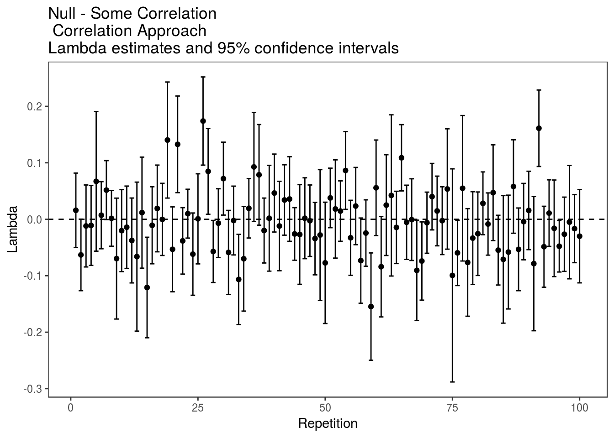
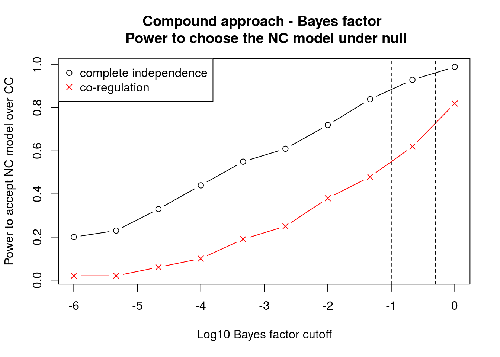
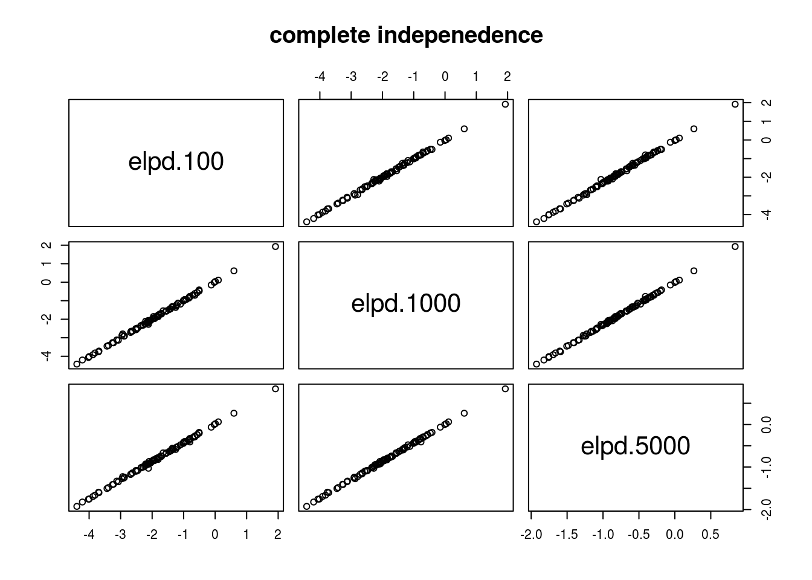
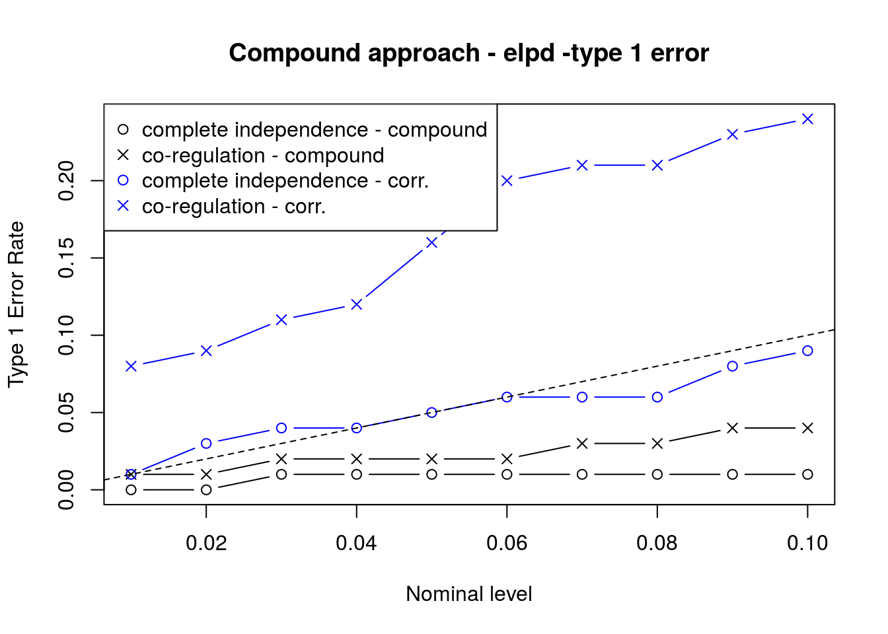
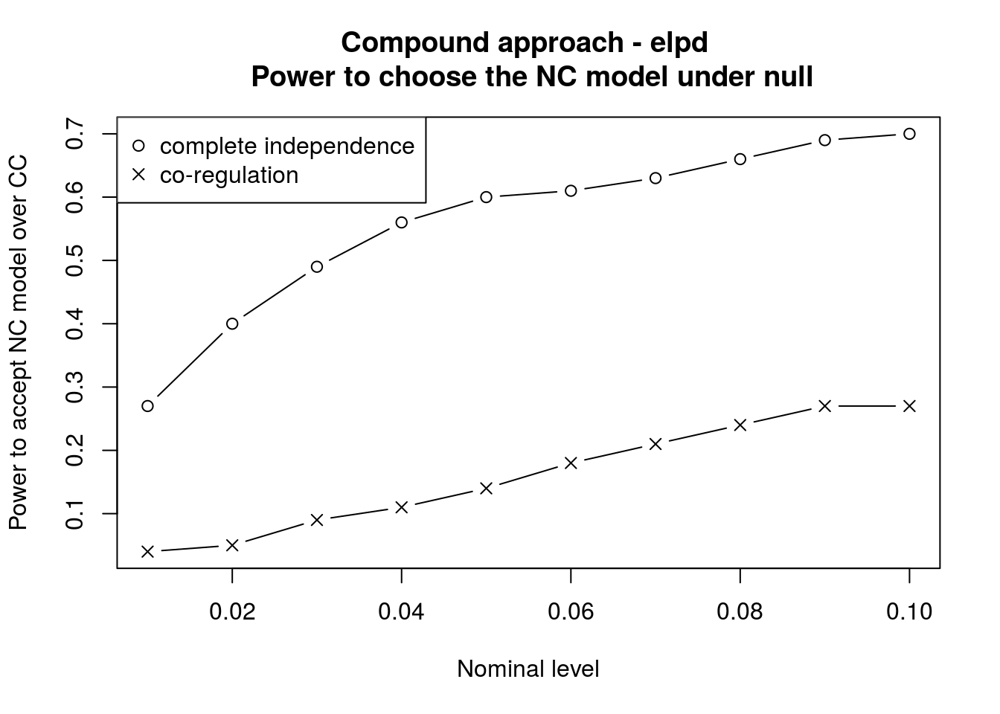
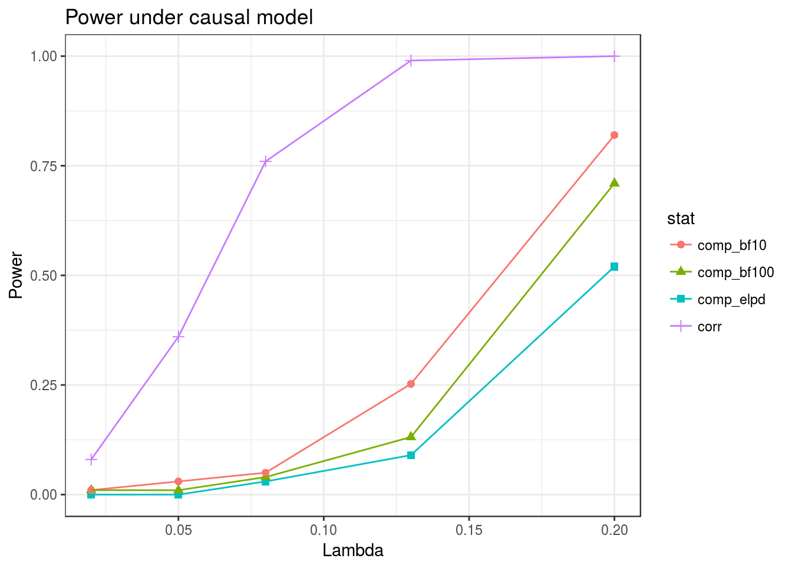

Simulations comparing compound and correlation methods
Jean Morrison
March 8, 2017
Overivew
These simulations are intended to compare the compound and correlation approaches described in the notes here. The notation used here should match the notes.
The workhorse function used for running simulations is the sim_sherlock_flex function in the sherlockAsh package. This function generates summary statistics for the two studies according to the inputs and then analyzes them using the compound and correlation methods. We will consider the following scenarios (described in more detail later):
- Non-Causal models:
- Complete independence: No relationship at all between summary statistics for the two studies
- Co-regulation: SNPs that are eQTLs are more likely to also effect the phenotype
- Causal models:
- We consider four levels of correlation between the true effect sizes ranging from small (0.13) to very large (0.77)
For each scenario, we will compare the power and type 1 error. For the compound method we consider both the elpd statistic and the Bayes factor for comparing the NC and CC model. We also consider a few choices of prior for the NC model. For the compound method, there are three possible conclusions that can be drawn from the results: 1) Accept the NC model over the CC model 2) Accept the CC model over the NC model 3) The data is indeterminate and does not strongly favor either. The correlation method uses more traditional hypothesis testing methods. In this approach we are able to either 1) Reject the null hypothesis of \(\lambda =0\) or 2) Fail to reject the null hypothesis.
Details of sim_sherlock_flex
The sim_sherlock_flex function takes the following inputs:
n.rep: Number of replicationsp: Number of SNPs. In all simulations in this document \(p=10,000\).g1: A function that takes one argument,pand returns \(\beta_1\)g2: A function that takes one argument, \(\beta_1\) and returns \(\beta_2\)maf.func: A function that takes one argument,pand returns a vector of minor allele frequencies.n1,n2: Sample sizes for eQTL and GWA studies. These are used for calculateing \(se(\hat{\beta}_1)\) and \(se(\hat{\beta}_2)\). In this document \(n_1=500\) and \(n_2=5,000\).types: A specification of which types of analysis to conduct. (Described below).C: A list of constants to consider. This specifies the prior distribution of \(\pi_{0}^{(2,1)}\) for the compound method (See equation 18 of the notes). We consider values of \(C\) of 100, 1000, and 5000.seed: Random seedcores: Number of cores to use
There are three choices that can be included in the types argument. If types=c() is used, no analysis will be performed but for each repetition, the heritability of gene expression and phenotype and the correlation between \(\beta_1\) and \(\beta_2\) will be calculated. The three types of analysis are
corr-est: Correlation method with \(\beta_1\) approximated by the posterior distribution of \(\beta_1\) obtained from ASH i.e., as described in Section 2.1 of the notes. \(g_{20}\) and \(g_{21}\) must also be estimated. We use \(\hat{g}_{20} = \hat{g}_{21}\) with both distributions estimated as the ASH fit of only \(\hat{\beta}_2\).corr-o: “Oracle” correlation method in which \(\beta_1\) are known. \(g_{20}\) and \(g_{21}\) are still estimated in the same was as forcorr-est.compound-est: The compound method in Section 3 of the notes. For this method \(\pi_{0}^{(1)}\), \(\pi_{0}^{(2,0)}\), \(\sigma_1\) and \(\sigma_2\) estimated by the maximum likelihood estimators. That is \(\hat{\pi}_{0}^{(1)}\) and \(\sigma_1\) maximize \[ l(\pi_{0}^{(1)}, \sigma_1 \vert \hat{\beta}_{1}, b_{1}) = \sum_{i=1}^{p}\log \left( \pi_{0}^{(1)} N(\hat{\beta}_{1,i}; 0, b_{1,i}^2) + (1-\pi_{0}^{(1)})N(\hat{\beta}_{1,i}; 0, \sigma_1^2 + b_{1,i}^2) \right) \] and \(\pi_{0}^{(2,0)}\) and \(\sigma_2\) maximize \[ l(\pi_{0}^{(2,0)}, \sigma_2 \vert \hat{\beta}_{2}, b_{2}) = \sum_{i=1}^{p}\log \left( \pi_{0}^{(2,0)} N(\hat{\beta}_{2,i}; 0, b_{2,i}^2) + (1-\pi_{0}^{(2,0)})N(\hat{\beta}_{2,i}; 0, \sigma_2^2 + b_{2,i}^2) \right) \]
Since g1 and g2 can be any functions, sim_sherlock_flex can be used to simulate from almost any model.
Non-Causal models
No Correlation: Data Generation
Data are simulated so that \(\beta_1\) and \(\beta_2\) are completely independent. Both \(\beta_1\) and \(\beta_1\) are simulated from mixtures of normal distributions specified by the following tables:
\(\beta_1\) (\(g_1\)):
| Proportion | 0.948 | 0.03 | 0.02 | 0.002 |
|---|---|---|---|---|
| Mean | 0 | 0 | 0 | 0 |
| \(\sqrt{var}\) | 0 | 0.08 | 0.1 | 0.2 |
\(\beta_{2}\) (\(g_{20} = g_{21}\)):
| Proportion | 0.9 | 0.1 |
|---|---|---|
| Mean | 0 | 0 |
| \(\sqrt{var}\) | 0 | 0.05 |
This gives an average of 520 eQTLs, 20 of which are strong eQTLs and about 1000 GWAS SNPs. The average heritability of gene expression is about 0.53 and the average heritability of the phenotype is abuot 0.37.
Here is one data set realized from this scenario. First we specify functions generating \(\beta_1\) and \(\beta_2\). Running sim_sherlock_flex with types=c() will summarize the average heritability of the two traits and the correlation between effect sizes.
library(ashr)
library(sherlockAsh)## Warning: replacing previous import 'ks::compare' by 'loo::compare' when
## loading 'sherlockAsh'set.seed(1e7)
g1n <- normalmix(pi=c(0.948, 0.03, 0.02, 0.002),
mean=rep(0, 4),
sd=c(0, 0.08, 0.1, 0.2))
g1 <- function(p){ rnormalmix(p, g1n)}
g20 <- normalmix(pi=c(0.9, 0.1), mean=rep(0, 2), sd=c(0, 0.05))
g2 <- function(b1){ rnormalmix(length(b1), g20)}
maf.func <- function(p){rbeta(n=p, 1, 5)}
#Calculate the average heritability and correlation of effect sizes
res <- sim_sherlock_flex(n.rep=100, p=10000, g1=g1, g2=g2,
maf.func=maf.func, n1=500, n2=5000,
types=c(), seed=1e7)
colMeans(res$stats)## h1 h2 rho
## 0.527005386 0.372269029 0.003055139Here are the statistics for one realization from this scenario. First generating \(\beta_1\) and \(\beta_2\)
p <- 10000
b1 <- g1(p)
b2 <- g2(b1)then \(\hat{\beta}_1\) and \(\hat{\beta}_2\):
n1 <- 500
n2 <- 5000
maf <- maf.func(p)
seb1 <- sqrt(1/(2*n1*maf*(1-maf)))
seb2 <- sqrt(1/(2*n2*maf*(1-maf)))
beta_hat_1 <- rnorm(n=p, mean=b1, sd=seb1)
beta_hat_2 <- rnorm(n=p, mean=b2, sd=seb2)Here are qq-plots for the two studies:
library(ggplot2)
pval1 <- 2*pnorm(abs(beta_hat_1/seb1), lower.tail=FALSE)
pval2 <- 2*pnorm(abs(beta_hat_2/seb2), lower.tail=FALSE)
qqthin(pval1) + ggtitle("eQTL Results") + theme(legend.position="none")qqthin(pval2) + ggtitle("GWAS Results") + theme(legend.position="none")Both studies have fairly strong signal but only one eQTL reaches genome wide significance (pval < \(5\cdot 10^{-8}\)). Ten SNPs reach this threshold in the GWAS.
Some Co-Regulation: Data Generation
In this scheme, there is still no causal relationship between the two traits but they share more causal variants than might be expected by chance. This pattern might arise if the two traits share some regualtors. eQTL effects \(\beta_1\) are drawn from the same distribution as in the previous section. SNPs that are eQTLs have a 50% chance of being effecting the phenotype while SNPs that are not eQTLs only have a 10% chance of effecting the phenotype. This scenario is encoded by the functions g1 and g2:
g1n <- normalmix(pi=c(0.948, 0.03, 0.02, 0.002),
mean=rep(0, 4),
sd=c(0, 0.08, 0.1, 0.2))
g1 <- function(p){ rnormalmix(p, g1n)}
g20 <- normalmix(pi=c(0.9, 0.1),mean=rep(0, 2),sd=c(0, 0.05))
g21 <- normalmix(pi=c(0.5, 0.5),mean=rep(0, 2),sd=c(0, 0.05))
g2 <- function(b1){
p <- length(b1)
nz <- sum(b1==0)
b2 <- rep(NA, p)
b2[b1==0] <- rnormalmix(nz, g20)
b2[b1!=0] <- rnormalmix(p-nz, g21)
return(b2)
}
#Calculate the average heritability and correlation of effect sizes
res <- sim_sherlock_flex(n.rep=100, p=10000, g1=g1, g2=g2,
maf.func=maf.func, n1=500, n2=5000,
types=c(), seed=1e7)
colMeans(res$stats)## h1 h2 rho
## 5.257946e-01 4.174313e-01 8.203993e-05Results
Results are stored for 100 simulations.
res1 <- getobj("../data/res_complete_independence.RData")
res2 <- getobj("../data/res_null_corr.RData")Correlation approach
First we look at the results for the correlation method:
#CI
corr_res1 <- data.frame("lambda"=res1$corr[2, , 1], "se"=res1$corr[2, ,2])
corr_res1$lower <- corr_res1$lambda - qnorm(0.975)*corr_res1$se
corr_res1$upper <- corr_res1$lambda + qnorm(0.975)*corr_res1$se
#Co-regulation
corr_res2 <- data.frame("lambda"=res2$corr[2, , 1], "se"=res2$corr[2, ,2])
corr_res2$lower <- corr_res2$lambda - qnorm(0.975)*corr_res2$se
corr_res2$upper <- corr_res2$lambda + qnorm(0.975)*corr_res2$se
#Plot
ggplot(corr_res1) + geom_errorbar(aes(x=1:100, ymax = upper, ymin=lower))+
geom_point(aes(x=1:100, y=lambda)) + geom_hline(yintercept=0, linetype=2) +
ggtitle("Null - Complete Independence\n Correlation method lambda estimates and 95% confidence intervals") +
xlab("Repetition") + ylab("Lambda") +
theme_bw() + theme(panel.grid=element_blank())
ggplot(corr_res2) + geom_errorbar(aes(x=1:100, ymax = upper, ymin=lower))+
geom_point(aes(x=1:100, y=lambda)) + geom_hline(yintercept=0, linetype=2) +
ggtitle("Null - some correlation\n Correlation method lambda estimates and 95% confidence intervals") +
xlab("Repetition") + ylab("Lambda") +
theme_bw() + theme(panel.grid=element_blank())
#Average lambda estimate
mean(corr_res1$lambda)## [1] 0.00108037mean(corr_res2$lambda)## [1] -0.0007058606#Type 1 error rate
mean(corr_res1$upper > 0 | corr_res1$lower < 0)## [1] 1mean(corr_res2$upper > 0 | corr_res2$lower < 0)## [1] 1The correlation approach performs well in both settings. The average estimate of \(\lambda\) is very close to zero in both cases and, in both cases there is only 1 type 1 error out of 100 simulations using a nominal type 1 error rate of 5%.
Compound approach
Next we look at the compound method. We considered three different values of \(C\) in the prior for \(P[\beta_2 =0 \vert \beta_1 \neq 0]\) (recall that this parameter has a Beta\((C*\pi_{0}^{(2,0)}, C*(1-\pi_{0}^{(2,0)}))\) prior). We consider \(C = 100, 1000\), and \(5000\).
comp_res1 <- data.frame("elpd-100"=res1$comp[1, , 5]/res1$comp[1,,6],
"elpd-1000"=res1$comp[2, , 5]/res1$comp[2,,6],
"elpd-5000"=res1$comp[3, , 5]/res1$comp[3,,6],
"bf-100"=res1$comp[1,,7], "bf-1000"=res1$comp[2,,7],
"bf-5000"=res1$comp[3,,7])
comp_res1[,3:6] <- comp_res1[,3:6]/log(10)
#Statistic summaries for complete independence case
apply(comp_res1, MARGIN=2, FUN=summary)## $elpd.100
## Min. 1st Qu. Median Mean 3rd Qu. Max.
## -4.389 -2.380 -1.858 -1.839 -1.078 1.915
##
## $elpd.1000
## Min. 1st Qu. Median Mean 3rd Qu. Max.
## -4.421 -2.379 -1.860 -1.839 -1.098 1.927
##
## $elpd.5000
## Min. 1st Qu. Median Mean 3rd Qu. Max.
## -1.9260 -1.0420 -0.8160 -0.7979 -0.4695 0.8394
##
## $bf.100
## Min. 1st Qu. Median Mean 3rd Qu. Max.
## -8.844 -5.148 -3.491 -3.743 -1.776 5.204
##
## $bf.1000
## Min. 1st Qu. Median Mean 3rd Qu. Max. NA's
## -8.829 -5.162 -3.511 -3.763 -1.769 5.200 1
##
## $bf.5000
## Min. 1st Qu. Median Mean 3rd Qu. Max.
## -8.830 -5.136 -3.489 -3.740 -1.735 5.200comp_res2 <- data.frame("elpd-100"=res2$comp[1, , 5]/res2$comp[1,,6],
"elpd-1000"=res2$comp[2, , 5]/res2$comp[2,,6],
"elpd-5000"=res2$comp[3, , 5]/res2$comp[3,,6],
"bf-100"=res2$comp[1,,7], "bf-1000"=res2$comp[2,,7],
"bf-5000"=res2$comp[3,,7])
#Convert Bayes factors from ln to log10:
comp_res2[,3:6] <- comp_res2[,3:6]/log(10)
#Statistic summaries for co-regulation case
apply(comp_res2, MARGIN=2, FUN=summary)## elpd.100 elpd.1000 elpd.5000 bf.100 bf.1000 bf.5000
## Min. -3.1310 -3.1780 -1.4230 -6.780 -6.7920 -6.791
## 1st Qu. -1.3830 -1.3700 -0.5770 -2.686 -2.6750 -2.674
## Median -0.4127 -0.3691 -0.1584 -1.293 -1.2790 -1.273
## Mean -0.4922 -0.4677 -0.1988 -1.446 -1.4070 -1.401
## 3rd Qu. 0.3206 0.3716 0.1593 -0.325 -0.2758 -0.272
## Max. 2.3490 2.3620 1.0230 5.856 5.9040 5.906First considering the Bayes factors — The value of \(C\) has very little effect on the Bayes factor:
pairs(comp_res1[, paste0("bf.", c(100, 1000, 5000))], main="Complete independence")
pairs(comp_res2[, paste0("bf.", c(100, 1000, 5000))], main="Co-regulation") The Bayes factors are negative for 99% of simulations in the complete independece scenario and 82% of simulations in the co-regulation scenario ( Negative Bayes factors indicate that there is more evidence for the NC model than the CC model). The type 1 error rate (i.e. the rate of incorrectly accepting the CC model over the NC model) using the Bayes factor depends on the cutoff chosen.
The Bayes factors are negative for 99% of simulations in the complete independece scenario and 82% of simulations in the co-regulation scenario ( Negative Bayes factors indicate that there is more evidence for the NC model than the CC model). The type 1 error rate (i.e. the rate of incorrectly accepting the CC model over the NC model) using the Bayes factor depends on the cutoff chosen.
log_bf_cutoff <- seq(0, 4, length.out=10)
t1e_1 <- sapply(log_bf_cutoff, FUN=function(s){mean(comp_res1$bf.100 > s)})
t1e_2 <- sapply(log_bf_cutoff, FUN=function(s){mean(comp_res2$bf.100 > s)})
plot(log_bf_cutoff, t1e_1, ylim=range(c(t1e_1, t1e_2)),
ylab="Type 1 Error Rate", xlab="Log10 Bayes factor cutoff", type="b")
points(log_bf_cutoff, t1e_2, col="red", type="b", pch=4)
legend("topright", legend=c("complete independence", "co-regulation"),
col=c("black", "red"), pch=c(1, 4))
abline(v=c(log10(2), 1), lty=2) In the complete indpendence case, the compound method has almost no type 1 errors (we observed one BF of \(10^5\) while all the rest are negative). In the co-regulation setting, there are more errors using lower thresholds. Using a BF cutoff of 2 (first vertical line), the type 1 error rate is 16%. Using a cutoff of 10, the type 1 error rate is 8%.
We can also look at the rate of correctly accepting the NC model over the CC model.
log_bf_cutoff <- seq(-6, 0, length.out=10)
pwr1 <- sapply(log_bf_cutoff, FUN=function(s){mean(comp_res1$bf.100 < s)})
pwr2 <- sapply(log_bf_cutoff, FUN=function(s){mean(comp_res2$bf.100 < s)})
plot(log_bf_cutoff, pwr1, ylim=range(c(pwr1, pwr2)),
ylab="Power to accept NC model over CC", xlab="Log10 Bayes factor cutoff", type="b")
points(log_bf_cutoff, pwr2, col="red", type="b", pch=4)
legend("topleft", legend=c("complete independence", "co-regulation"),
col=c("black", "red"), pch=c(1, 4))
abline(v=-1*c(log10(2), 1), lty=2)
Not surprisingly, in the complete independence scenario, there is stronger evidence to accept the NC model over the CC model.
Next we consider the elpd metric for comparing models. Like the BF, these are also fairly insensitive to the choice of \(C\).
pairs(comp_res1[, paste0("elpd.", c(100, 1000, 5000))], main="complete indepenedence")
pairs(comp_res1[, paste0("elpd.", c(100, 1000, 5000))], main="co-regulation")
For these statistics, negative values also indicate that the NC model is favored over the CC model. Treating the elpd statistics like \(t\)-statistics, we can use a one-sided test to choose one model over the other. Here we plot the type 1 error as a function of the nominal level. The correlation method is include for comparison, though for the correlation approach we use a two sided test.
level <- seq(0.01, 0.1, length.out=10)
thresh_one_sided <- qnorm(1-level)
thresh_two_sided <- qnorm(1-(level/2))
t1e_1 <- sapply(thresh_one_sided, FUN=function(s){mean(comp_res1$elpd.100 > s)})
t1e_2 <- sapply(thresh_one_sided, FUN=function(s){mean(comp_res2$elpd.100 > s)})
t1e_corr_1 <- sapply(thresh_two_sided, FUN=function(s){mean(abs(corr_res1$lambda/corr_res1$se) > s)})
t1e_corr_2 <- sapply(thresh_two_sided, FUN=function(s){mean(abs(corr_res2$lambda/corr_res2$se) > s)})
plot(level, t1e_1, ylim=range(c(t1e_1, t1e_2, t1e_corr_1, t1e_corr_2)),
ylab="Type 1 Error Rate", xlab="Nominal level", type="b")
points(level, t1e_2, type="b", pch=4)
points(level, t1e_corr_1, type="b", col="blue")
points(level, t1e_corr_2, type="b", col="blue", pch=4)
legend("topleft", legend=c("complete independence - compound", "co-regulation - comopound",
"complete independence - corr.", "co-regulation - corr."),
col=rep(c("black", "blue"), each=2), pch=rep(c(1, 4), 2))
abline(0, 1, lty=2)
The compound approach and the correlation elpd statistic have similar type 1 error rates and both control the type 1 error below the nominal level (dotted line) for both scenarios.
We can also look at the power of the elpd statistic to choose the NC model over the CC model.
level <- seq(0.01, 0.1, length.out=10)
thresh <- -1*qnorm(1-level)
pwr1 <- sapply(thresh, FUN=function(s){mean(comp_res1$elpd.100 < s)})
pwr2 <- sapply(thresh, FUN=function(s){mean(comp_res2$elpd.100 < s)})
plot(level, pwr1, ylim=range(c(pwr1, pwr2)),
ylab="Power to accept NC model over CC", xlab="Nominal level", type="b")
points(level, pwr2, type="b", pch=4)
legend("topleft", legend=c("complete independence", "co-regulation"), pch=c(1, 4))
The elpd statistic with a nominal level of 0.05 gives a somewhat lower power to conclusively choose the NC model than using the BF with a threshold of 10, but the rate of choosing the wrong model is also lower.
Causal Relationship
Data Generation
In these simulations, there is a causal relationship between the two traits. We generate \(\beta_1\) as in the previous sections. \(\beta_2\) is generated as \(\lambda \beta_1 + u\) where \(u\) is drawn from the \(g_2\) distribution used in previous sections — that is the mixture given by the table
\(g_2\) mixture compononents:
| Proportion | 0.9 | 0.1 |
|---|---|---|
| Mean | 0 | 0 |
| \(\sqrt{var}\) | 0 | 0.05 |
We will consider values of \(\lambda\) of 0.02, 0.05, 0.08, 0.13 and 0.2. These correspond to correlations between between \(\beta_1\) and \(\beta_2\) for SNPs that effect both traits of 0.13, 0.3, 0.44, 0.62 and 0.77 respectively. The functions encoding this scenario are:
g1n <- normalmix(pi=c(0.948, 0.03, 0.02, 0.002),
mean=rep(0, 4),
sd=c(0, 0.08, 0.1, 0.2))
g1 <- function(p){ rnormalmix(p, g1n)}
g20 <- g21 <- normalmix(pi=c(0.9, 0.1),
mean=rep(0, 2),
sd=c(0, 0.05))
maf.func <- function(p){rbeta(n=p, 1, 5)}
##Summaryize average heritability in two studes
#And average correlation between beta_1 and beta_2
zz <- matrix(nrow=5, ncol=3)
for(i in 1:5){
lambda <- c(0.02, 0.05, 0.08, 0.13, 0.2)[i]
g2 <- function(b1){
p <- length(b1)
nz <- sum(b1==0)
b2 <- rep(NA, p)
b2[b1==0] <- rnormalmix(nz, g20)
b2[b1!=0] <- lambda*b1[b1!=0] + rnormalmix(p-nz, g21)
return(b2)
}
res <- sim_sherlock_flex(n.rep=100, p=10000, g1=g1, g2=g2,
maf.func=maf.func, n1=500, n2=5000,
types=c(), seed=1e7)
zz[i, ] <- colMeans(res$stats)
}
zz <- data.frame(zz)
names(zz) <- c("Avg. eQTL herit.", "Avg. GWAS herit.", "Avg corr btw beta1 and beta2")
rownames(zz) <- paste0("lambda ", c(0.02, 0.05, 0.08, 0.13, 0.2))
print(zz)## Avg. eQTL herit. Avg. GWAS herit. Avg corr btw beta1 and beta2
## lambda 0.02 0.5260008 0.3755320 0.1304131
## lambda 0.05 0.5260008 0.3764969 0.3002655
## lambda 0.08 0.5260008 0.3782368 0.4451529
## lambda 0.13 0.5260008 0.3828207 0.6242689
## lambda 0.2 0.5260008 0.3926032 0.7733138Results
We will compare the power of
- The correlation result using a nominal type 1 error level of 0.05 (two-sided test)
- The compound method using the Bayes factor with a threshold of 10 and 100
- The compound method using the elpd statistic with a nominal type 1 error level of 0.05 (one-sided test)
Note that the Bayes factor with a threshold of 10 may have larger type 1 error than the other methods
library(tidyr)
res <- list()
lams <- c(0.02, 0.05, 0.08, 0.13, 0.2)
for( i in 1:5){
res[[i]] <- getobj(paste0("../data/res_causal_", lams[i], ".RData"))
}
power <- data.frame("lambda"=lams)
power$comp_bf10 <- power$comp_bf100 <- power$comp_elpd <- power$corr <- NA
for(i in 1:5){
corrstats <- res[[i]]$corr[2, , 1]/res[[i]]$corr[2, , 2]
comp_elpd <- res[[i]]$comp[1, , 5]/res[[i]]$comp[1, , 6]
comp_bf <- res[[i]]$comp[1, , 7]/log(10)
power$comp_bf10[i] <- mean(comp_bf > 1, na.rm=TRUE) #One missing BF
power$comp_bf100[i] <- mean(comp_bf > 2, na.rm=TRUE) #One missing BF
power$comp_elpd[i] <- mean(comp_elpd > qnorm(0.95))
power$corr[i] <- mean(abs(corrstats) > qnorm(0.975))
}
power_long <- gather(power, "stat", "power", -lambda)
ggplot(power_long) + geom_point(aes(x=lambda, y=power, group=stat, color=stat, shape=stat), size=2) +
geom_line(aes(x=lambda, y=power, group=stat, color=stat)) +
xlab("Labmda") + ylab("Power") + ggtitle("Power under causal model") +
theme_bw()
For the highest correlation level, the compound approach using the Bayes factor is the most powerful. For lower values of \(\lambda\), the correlation appraoch is the most powerful.
This R Markdown site was created with workflowr